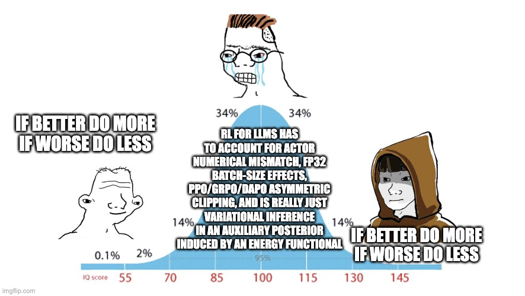
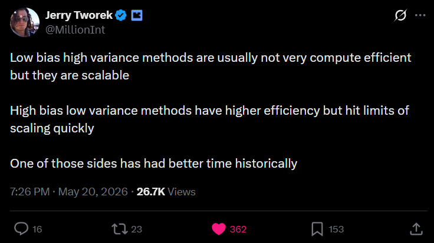

Deriving Policy Gradient.
Deep learning circuits are differentiable; we can compute gradients with the output which we get from a neural network with respect to the loss function's loss, which is a mathematical equation. In RL, it is computationally intractable to differentiate the world (RL env). It is like state -> policy -> action -> reward, where reality just gives us the scalar non-differentiable reward signal. So if we cannot differentiate through the world, the only place where differentiation happens is the policy's probability.
Since you can only differentiate your policy and observe scalar reward, the only mathematical way to connect them is to find the Expected Value over all possible futures: $$J(\theta) = \sum_{x} P_\theta(x) R(x)$$ We are forced to take the derivative of the action instead of taking the derivative of the result of the action. That is why we end up with a computationally intractable sum. $$\nabla_\theta J(\theta) = \sum_{x} \nabla_\theta P_\theta(x) R(x)$$ But the question is why derivative of sum instead of one sample? Reason is probability distribution cannot be judged by a single sample. One sample which gives you high reward can be random and can give us very negative reward next time. That is why we average all possible futures. And as we are averaging all possible futures, we must take the derivative of the average.
Derivative of sum is: $$\nabla_\theta J(\theta) = \nabla_\theta \left( \sum_{x} P_\theta(x) R(x) \right)$$ But we know reward has no derivative. $$\nabla_\theta J(\theta) = \sum_{x} \nabla_\theta P_\theta(x) R(x)$$ This is a paradox. We do not have compute for sampling all possible moves as we are moving through continuous policies which are not possible to enumerate.
We only have the compute power to take a few samples, but the sum needs all the samples so we are not allowed to do that as well. If we just take the derivative of one raw sample, the network learns noise and if we try to calculate the exact sum, which is not possible at all (yet). This gives us expectation estimate from random sample and log derivative becomes the only solution to make policy gradient method computable.
Our goal is to maximize the expected reward. In math, an expectation is just the probability of taking an action, multiplied by the reward of that action, summed up over all possible actions: $$J(\theta) = \sum_{x} P_\theta(x) R(x)$$ To optimize through gradient, we take the derivative of the sum: $$\nabla_\theta J(\theta) = \sum_{x} \nabla_\theta P_\theta(x) R(x)$$ To calculate the sum we need to sample, but \(\nabla_\theta P_\theta(x)\) is not a probability distribution. It is gradient. You cannot sample from a gradient.
Here we hit the wall. We cannot compute the sum of all possible actions when it is continuous; that is computationally not feasible at all. But we can estimate the sum. How do you estimate a massive sum in statistics? You use an Expectation[footnote]. You do rollouts, pick a few random actions (\(x\)), see what the reward is, and average the results. But then again, gradients cannot be sampled. We need valid \(P_\theta(x)\) in front of the equation, so that it becomes a valid statistical Expectation again. That is what makes log-derivative inevitable.
Mathematical Proof of Policy Gradient
We have an uncomputable gradient equation. $$\nabla_\theta J(\theta) = \sum_{x} \nabla_\theta P_\theta(x) R(x)$$ We want to make it Expectation[footnote], so we need to put valid sampling in the equation: $$\sum_{x} P_\theta(x) \dots$$ We multiply the inside of the summation by \(\frac{P_\theta(x)}{P_\theta(x)}\) (which is just 1, so it changes nothing): $$\nabla_\theta J(\theta) = \sum_{x} \left( \frac{P_\theta(x)}{P_\theta(x)} \right) \nabla_\theta P_\theta(x) R(x)$$ If we rearrange by putting \(P_\theta(x)\) from the numerator to the very front: $$\nabla_\theta J(\theta) = \sum_{x} P_\theta(x) \left( \frac{\nabla_\theta P_\theta(x)}{P_\theta(x)} \right) R(x)$$ We now have \(\sum_{x} P_\theta(x)\).
More to it, look at this term: $$\frac{\nabla_\theta P_\theta(x)}{P_\theta(x)}$$ We know derivative of \(\ln(z)\) is \(\frac{1}{z}\) multiplied by the derivative of \(z\) itself. $$\nabla_\theta \ln(z) = \frac{1}{z} \nabla_\theta z$$ If we swap variable \(z\) and replace it with our policy \(P_\theta(x)\), then it is: $$\nabla_\theta \log P_\theta(x) = \frac{1}{P_\theta(x)} \nabla_\theta P_\theta(x)$$ which simplifies to: $$\nabla_\theta \log P_\theta(x) = \frac{\nabla_\theta P_\theta(x)}{P_\theta(x)}$$ Adding this in our earlier equation, it looks like this now: $$\nabla_\theta J(\theta) = \sum_{x} P_\theta(x) \Big( \nabla_\theta \log P_\theta(x) \Big) R(x)$$ which means now we can find expectation: $$\nabla_\theta J(\theta) = \mathbb{E}_{x \sim P_\theta} \left[ \nabla_\theta \log P_\theta(x) R(x) \right]$$ Now you can sample through a valid probability distribution.
Equation now becomes intuitive: do some rollout from parameterized \(P_\theta\). $$\mathbb{E}_{x \sim P_\theta}$$ Collect these trajectories. Take log derivative of those probabilities and multiply by reward. $$\left[\nabla_\theta \log P_\theta(x) R(x) \right]$$ This is very simple: all the actions which lead to high reward increase the probability, and if they lead to negative reward then decrease the probability. Reward becomes the signal by which this probability gets increased or decreased. This meme now makes sense to you.

Policy gradient gives crude credit assignment. It just benefits all the actions which have positive reward and punishes if reward is not good. It could be possible that some actions are responsible for the reward, not all, but still they are ignored too. This is quite true, but in most environments, state at time \(t+k\) is largely determined by what happened at \(t+k-1\), not at \(t\). Distant past actions have had their effect "absorbed" into the current state. In sparse long horizon tasks this breaks down; otherwise, in practice it works well as the state itself carries forward the consequences of earlier actions.
Goal of reward maximization itself can be a trap for us to find optimal policy. As we just follow the policy which gives us higher reward (and that maximization is our goal), policy gradient can get stuck in local maxima. Policy gradient does gradient ascent, so it converges to a local maximum, whatever basin it falls into first.
Early in training, some behavior happens to get reward. Policy gradient increases the probability of that behavior. Now the policy mostly does that behavior. The gradient signal mostly comes from that behavior. The policy stops exploring alternatives. We just derived SAC which solves exactly this problem. It adds Entropy bonus to reward. It actively penalizes probability collapse. It keeps the policy from becoming too certain too early.
Equation which we derived above is pure policy-gradient and called REINFORCE. This is pure Monte Carlo but it also has high variance. One trajectory might get high reward because the environment was lucky. Gradient now makes this more likely, so we have learned from noise.
Sampling only a few trajectories is why policy-gradient works, and that same thing now introduces variance. To solve this we add baseline. This is A2C. Idea is we do not need to wait for terminal reward but to guess the next state future, that is the Value function. We compress the entire thing into next state. This is just making future predictable which earlier was unpredictable. $$\text{Estimated } G_t \approx r_t + \gamma V(s_{t+1})$$ This replaces pure Monte Carlo: $$G_t = r_t + \gamma r_{t+1} + \gamma^2 r_{t+2} + \gamma^3 r_{t+3} \dots$$ So now we have some predictability instead of just moving randomly till terminal output, but the Value function is a neural network which gives not accurate prediction at init.
This is what makes this thing beautiful: it is "learning from a prediction of a prediction." (learning from prediction which is another prediction). We train this value function with regression loss: $$\text{Target} = r_t + \gamma V(s_{t+1})$$ $$Loss = \big( V(s_t) - \text{Target} \big)^2$$ So for example we are at state 5 and reward received at terminal then it is: $$r_5 = 0$$ $$\text{Target} = 0 + \gamma V(s_6)$$ $$Loss = \big( V(s_5) - \gamma V(s_6) \big)^2$$ This is what we meant by learning from prediction with another prediction. Here we do not know reward; still \(V(s_5)\) tries to match with \(V(s_6)\).
But now let us say at step 10 we got reward. $$r_{10} = +10$$ Because the game is literally over, there is no Step 11: $$V(s_{11}) = 0$$ $$\text{Target} = 10 + (\gamma \times 0)$$ $$Loss = \big( V(s_{10}) - 10 \big)^2$$ The thing we derived is process of bootstrapping the foundation of Temporal-difference learning. So at last step it now has true answer which will flow backward each step with every epoch.
This means we need N epochs for N steps to flow the information of value function. This is slow, and PPO solves this with GAE (Generalized Advantage Estimation). Well, this Advantage computation and A2C is REINFORCE with this extra Advantage process. $$A_t = \big( r_t + \gamma V(s_{t+1}) \big) - V(s_t)$$ $$\nabla_\theta J(\theta) = \mathbb{E} \Big[ \nabla_\theta \log \pi_\theta(a_t|s_t) \cdot A_t \Big]$$
Deriving PPO (Proximal Policy Optimization)
In policy gradient, you basically throw away the previous data with updating the policy. Think this way: in DL, data is fixed, so even if it has wrong prediction and loss will be higher, it will again visit at another epoch and smooths the loss. In RL, data is alive, generated by policy. Bad policy -> Bad data -> Policy gets worse -> Even worse data -> ... creates the problem of "Policy collapse". See that we are throwing data of previous step with updating the policy on it. What if we did not throw it away? But again, it is from old policy which changed with update?
The inevitable solution is "Importance sampling". Importance sampling takes old data but reweights each sample by how much more or less the new policy would have chosen that action. If the new policy likes that action even more, upweight it. If the new policy would rarely do that, downweight it. This is probability ratio \(r_t\) in PPO. $$r_t(\theta) = \frac{\pi_{\text{new}}(a|s)}{\pi_{\text{old}}(a|s)}$$ $$\text{Objective} = r_t(\theta) \cdot A_t$$ This means if new policy is more likely to take the action than old policy, ratio will be \(> 1\) multiplied by advantage, and it will be \(< 1\) if it is less likely than old policy, multiplied by advantage.
This itself creates the problem. If new probability has ratio \(> 1\) and advantage is a large number, then probability will become too much likely, which can diverge the policy from old one, and then it will be reinforced again. Problem is that \(r_t(\theta)\) gets too big or too small, which PPO solves through clipping. We introduce a hyperparameter called \(\epsilon\) (epsilon), usually set to \(0.2\). This means we allow ratio to move between "0.8" and "1.2". New policy can make action 20% percent more likely or 20% less likely, no more than that. $$\text{clip}(r_t(\theta), 1-\epsilon, 1+\epsilon)$$ Okay, now if policy made terrible mistake which needs massive step and we are clipping it? To solve this we add min(). $$L^{CLIP}(\theta) = \mathbb{E} \left[ \min\Big( r_t(\theta) A_t, \;\; \text{clip}\big(r_t(\theta), 1-\epsilon, 1+\epsilon\big) A_t \Big) \right]$$ Now it chooses most lower score out of unclipped and clipped. This creates scenarios like:
- You took action and its \(A > 0\). Now if it is under clipping score then gradient will flow; otherwise it will choose clipped score.
- You took action and its \(A < 0\). Now even if it is under clipped, we keep unclipped score and choose minimum as we want to punish this action.
Coming to the part of Advantage calculation of PPO which uses GAE (Generalized Advantage Estimation). $$L^{VF}(\theta) = \mathbb{E}\left[ \left( V_\theta(s_t) - \hat{R}_t \right)^2 \right]$$ trained with similar regression loss function we saw earlier: $$L^{VF}(\phi) = \mathbb{E} \left[ \big( V_\phi(s_t) - R_t \big)^2 \right]$$ The problem earlier we saw is 1-step bootstrapping has zero variance but high bias (due to untrained critic), while Monte Carlo has high variance with low bias. GAE resolves this exact tradeoff.
1-step TD error looks like: $$\delta_t = r_t + \gamma V(s_{t+1}) - V(s_t)$$ Now let us take 2-step TD error: $$A^{(2)}_t = r_t + \gamma r_{t+1} + \gamma^2 V(s_{t+2}) - V(s_t)$$ We see that \(A^2\) step advantage is just two \(A^1 + A^1\).
Proof: $$\delta_t + \gamma \delta_{t+1}$$ $$= \big(r_t + \gamma V(s_{t+1}) - V(s_t)\big) + \gamma \big(r_{t+1} + \gamma V(s_{t+2}) - V(s_{t+1})\big)$$ canceling \(V(s_{t+1})\) makes: $$= r_t + \gamma r_{t+1} + \gamma^2 V(s_{t+2}) - V(s_t)$$ which is: \(A^{(2)}_t\). $$A^{GAE}_t = (1-\lambda) \Big[ A^{(1)}_t + \lambda A^{(2)}_t + \lambda^2 A^{(3)}_t + \lambda^3 A^{(4)}_t \dots \Big]$$ compressing it: $$A^{GAE}_t = \sum_{l=0}^{\infty} (\gamma \lambda)^l \delta_{t+l}$$
Now we can use \(\lambda\) hyperparam (0-1): $$\lambda = 0 \text{ makes (A2C):}$$ $$A^{GAE}_t = \delta_t$$ $$\lambda = 1 \text{ makes (REINFORCE):}$$ $$A^{GAE}_t = \sum_{l=0}^{\infty} \gamma^l \delta_{t+l} = G_t - V(s_t)$$ Generally \(\lambda = 0.9\) makes it [1.0, 0.95, 0.90, 0.85, 0.81, 0.77...] where 1 is at first step and decaying forward with growing horizon.
Remember we said that policy gradient can get stuck in local maxima and adding entropy bonus helps prevent it? PPO does that too. It adds entropy bonus: $$S[\pi_\theta] = - \sum_{a} \pi_\theta(a|s) \log \pi_\theta(a|s)$$ This is Shannon Entropy. If probability = 1 then entropy will be 0 and vice versa.
With this we derived PPO: $$L^{PPO}(\theta) = L^{CLIP}(\theta) - c_1 \cdot L^{VF}(\theta) + c_2 \cdot S[\pi_\theta]$$ where c1 and c2 are hyperparameters.
Bias-Variance Tradeoff
See this tweet:

Idea is having wrong assumption is worse than no assumption in such methods. If we put bias in architecture and if it matches the structure of problem, then it intactly compresses search space. But if it does not, then it becomes hard ceiling which is not solved by any amount of scaling compute.
High bias methods make strong assumptions to reduce noise. They are efficient if assumptions do the work; if not, or if they do not hold at scale, then assumptions themselves become the ceiling. High variance method has weaker assumptions. They are noisy and need more data, but as they are not constrained by wrong assumption at scale, when we give more sample it averages out this variance.
Entire progression of RL algorithm: Dynamic programming -> model-based -> value-based -> policy gradient -> PPO -> GRPO... Shows we are removing assumptions at each step, which gets paid by more compute. GRPO (group relative policy optimization) removes even value function, replacing it with group mean. More variance than PPO, but one less learned component making assumptions about value structure. It paid off because producing responses are cheaper in language modeling settings.